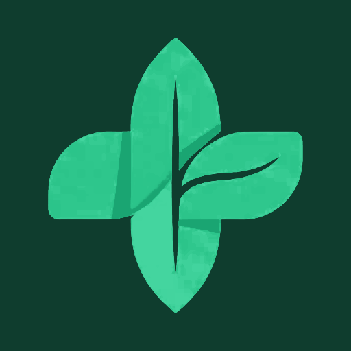
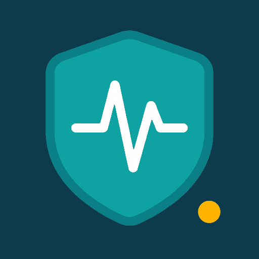
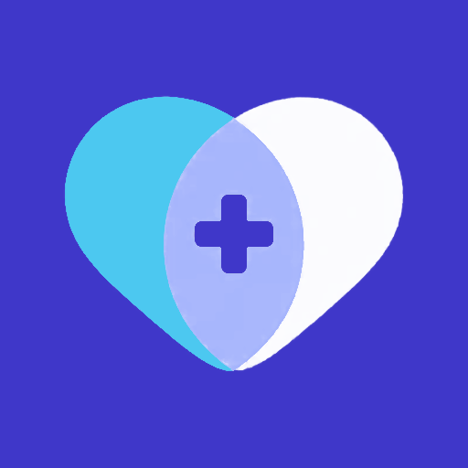

Cabinet Médical: design concepts
Three different ways to use the same app: a sidebar with tables, a top menu with cards, and a phone-style bottom dock with tiles. Each has its own colors, type, icon, animations and phone layout, in light and dark (☾ button at the top of each). All three share the same demo patients, so a change in one shows up in the others.

Sauge
Barre latérale · tableaux · Left sidebar · tables
Dense et précis, comme un tableur · Dense and precise, like a spreadsheet

Oasis
Menu en haut · cartes · Top menu · cards
Clair, visuel, en cartes · Clear, visual, card-based

Iris
Dock en bas · tuiles · Bottom dock · tiles
Moderne, comme une app de téléphone · Modern, like a phone app
Demo only: fictional patients, stored in this browser. Nothing is sent anywhere.